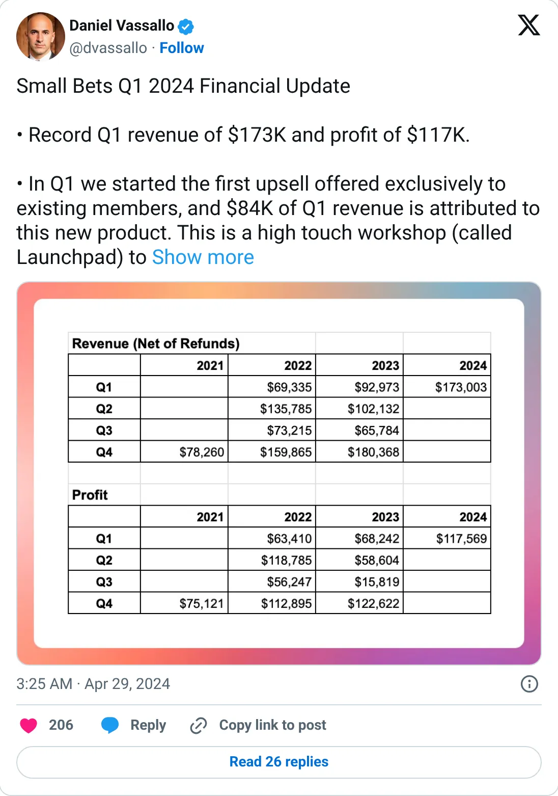
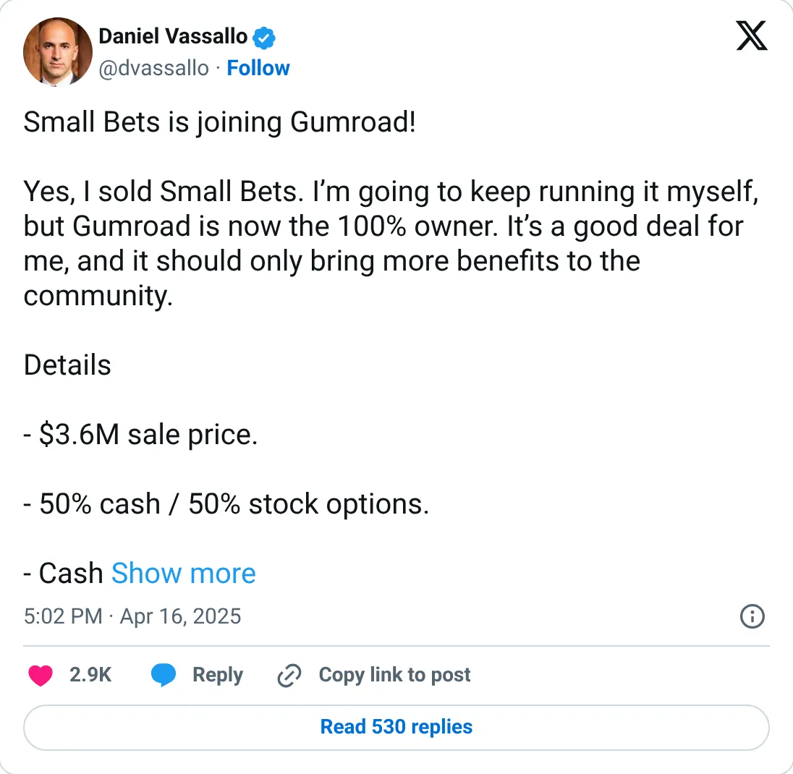

Not a pick
Small Bets
A real-looking company with a headline you should not plan against.
Q1 2024: $173K revenue · sold to Gumroad for $3.6M
Should you build this
The company may be real. The figure on the card is a peak, a stale year, a cash month, or an average. Small Bets was sold to Gumroad in April 2025 for $3.6M, half cash and half options. That deal structure is specific enough to take seriously. The monthly number this report uses is Q1 2024 revenue of $173K, divided by three, about $58K. One quarter, a year before the sale, averaged into a run-rate. It was a real education business. It is not a current MRR, and the quarter was a record, which is exactly the slice you pick when you want the rank.
Cited from the captured posts, shown below: the earliest captured post (Apr 29, 2024) is the source for “Q1 2024: record $173K revenue, $117K profit (≈$58K/mo)”; the latest milestone (Apr 16, 2025) is the source for “Sold to Gumroad for $3.6M (50% cash / 50% options)”.
Posts this is based on

Q1 2024: record $173K revenue, $117K profit (≈$58K/mo)
Open on X

Sold to Gumroad for $3.6M (50% cash / 50% options)
Open on X
What the product is
Paid community, courses and live sessions for people building small independent online income streams.
⚠ Exited: sold to Gumroad (Apr 2025). The monthly figure is the Q1 2024 average.